Sincronització en Aules
Una vegada tenim creades i publicades les llistes definitives, ja se podria sincronitzar amb la finalitat de tenir als participants en AULES, però és convenient esperar a que estiga a punt de començar el curs per tal de tenir la llista més real possible (per si ha hagut alguna renúncia des del moment de publicació de les llistes i el començament del curs).
Anem al nostre curs en Aules. I en el bloc administració obrim el desplegable GVA Aules
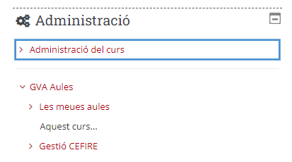
Triem l’opció Gestionar edicions
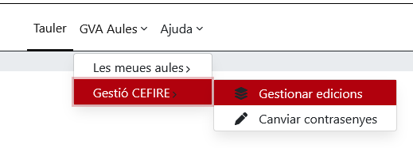
Triem el curs que volem sincronitzar
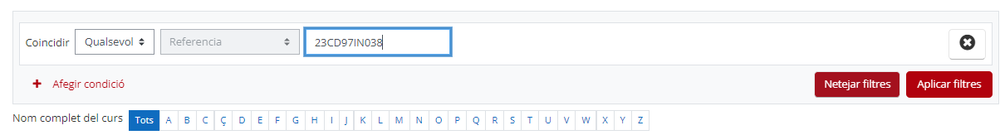
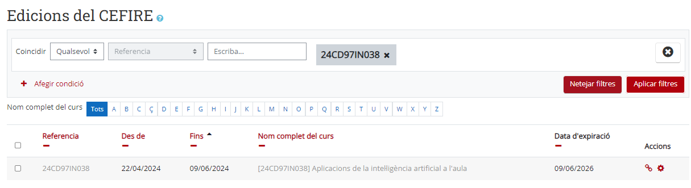
Si no trobe el meu curs fes clic al següent enllaç:
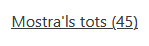
Una vegada tenim el curs anem a gestionar a la rodeta dentada.
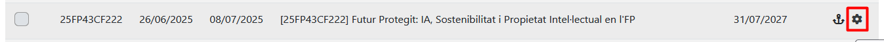
Al final del tot estan els botons per a l'actualització/sincronització dels participants en Aules. Si existix alguna baixa/alta s'haurà de repetir el mateix procés perquè es produïsca la nova actualització.
Apareix la pantalla amb tots els participants del curs i els que ja estavem. A la part inferior tenim Gestionar edició, en el que podem indicar que volem sincronitzar, matriculacions i desmatriculacions.
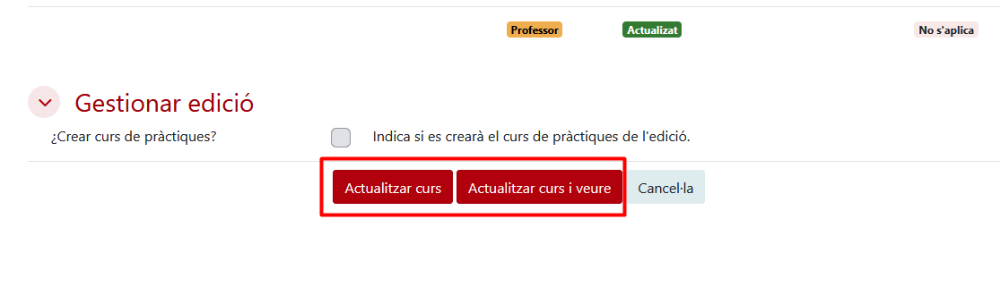
I Actualitzem curs.
|
⚠️ IMPORTANT No crear fòrums en Aules de més de 1000 participants perquè es bloqueja tot Aules. |
Evidències
Recordeu, les evidencies han d'anar amb un PDF totes juntes en CODI_Evidencias.pdf:
- Fotos bàners
- Foto de la difusió de la formació a les xarxes socials o pàgina web on apareguen els logos de FSE.
- Foto de la formació publicada a la web del CEFIRE (Ovifor) on apareguen els logos de FSE.
- 2/3 Fotos d'alguna sessió presencial on apareguen els logos de FSE (Roll Up).
- Si és online foto del l'Aules on aparega el Baner amb el logo FSE.
Importació Massiva Participants
En alguns casos tenim cursos que no pasen pel procés d'inscripció com a tal. Com per exemples els cursos de coordinadors del PAF, etc... Podem importar els participants directament a l'edició sense necessitat de passar per l'apartat d'inscripció. Anirem a "Importar solicitud de participantes":
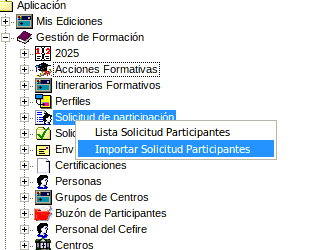
Ens pareixerà la següent pantalla:
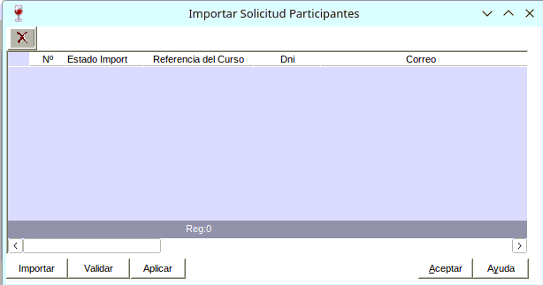
I farem clic en Importar i ens demanarà un fitxer en format CSV i extensió .txt. És important que el fitxer estiga correctament formatat.
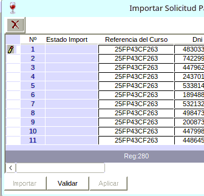
Un vegada importat l'arxiu li donarem a validar, i ens apareixeran dos possibles estats:
- OK: És correcte i es pot importar.
- NOOK: Hi ha algun error i no es pot importar.
Caldrà comprovar eixos errors.
L'arxiu que s'ha d'importar ha de tindre el següent format:
|
25FP99CF999 12345678 xx.xxxxxr@edu.gva.es NOM COGNOMS 25FP99CF999 12345678 xx.xxxxxr@edu.gva.es NOM COGNOMS 25FP99CF999 12345678 xx.xxxxxr@edu.gva.es NOM COGNOMS |
- Els noms no van entre cometes.
- El primer camp és el codi de referència del curs.
- El segon camp és el DNI del participant.
- El tercer camp és el correu electrònic del participant.
- Els camps següents són el nom i els cognoms del participant.
- Els camps han d'estar separats per tabuladors, no per comes.
- El fitxer ha d'estar en format de text pla (.txt) i no en format Excel (.xlsx o .xls).
Podeu fer ús un document de Full de càlcul per a LibreOffice per a crear el fitxer CSV. Un cop creat, caldrà exportar-lo com a text pla (.txt) i assegurar-se que els camps estan separats per tabuladors. Podeu descarregar un exemple de plantilla EXEMPLE.csv [Descàrrega d'arxiu] per a utilitzar-lo com a guia. Caldrà que l'importeu al LibreOffice Calc i el modifiqueu.
Quan tingueu que crear un fitxer CSV, heu de Guardar como i Editar les opcions d'exportació:
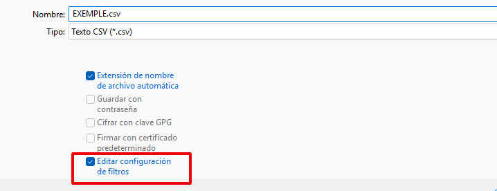
Les opcions que heu de seleccionar són:
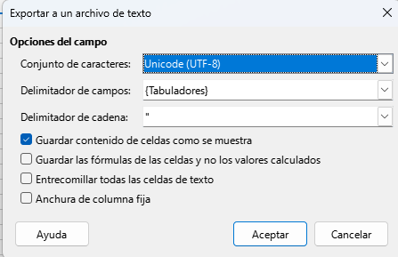
Una vegada tingueu guardat el fitxer heu de canviar-li l'extensió a .txt, per exemple: EXEMPLE.txt. I ja podeu importar-lo a Gesform.